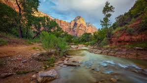
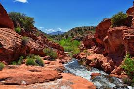
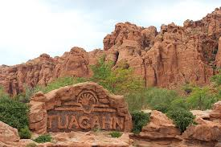

Saint George is in southern Utah. It is known for its red rock and proximity to Zion National Park. There is Tuacahn Amphitheatre where top class actors perform broadway musicals.



I love St. George for the beautiful scenery of the red rocks, blue skies, and desert plants. I grew up near the Red Mountain in Ivins and as I grew up there, my love for the red rocks and green plants together grew. The community in St. george is an especially nice one. The art community is a particularly nice one here in St. George. We have art festivals displaying all kinds of art forms, many art competitions to show your love of art, and we even have school focusing on the arts.
Although some may not realize it, the desert actually has a lot of variety in the plants that can grow in the ecosystem. One of my favorite plants that is popular here in Saint George is the Tuscan Rosemary, which has beautiful little blue flowers that shower the plant. Another plant you will find decorating the town is the Yellow Bird of Paradise. This shrub has thin long branches with yellow and pink flowers blooming at the ends. Some of the other plants that we have are the Red Oleander, Desert Museum Palo Verde, and Joshua Trees.